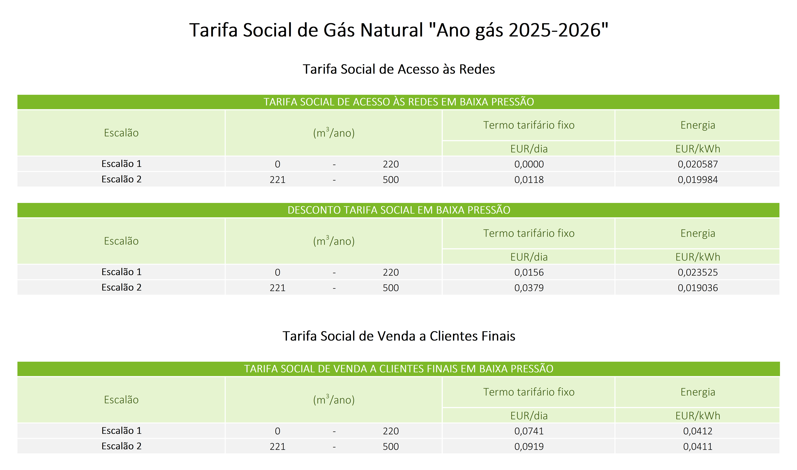

Tarifa Social de Gás Natural 2025/26
A Tarifa Social de Energia é um apoio destinado a consumidores economicamente vulneráveis, proporcionando um desconto significativo na fatura de gás natural. Este desconto é aplicado tanto no termo de fixo como no termo de consumo de energia.
Abaixo encontra a tabela com os valores dos descontos para o período 2025/26, definidos pela ERSE (Entidade Reguladora dos Serviços Energéticos).
Simule o Impacto na Sua Fatura
Quer saber quanto pode poupar com a Tarifa Social aplicada ao seu consumo? Utilize o Simulador de Tarifários de Gás Natural 2025.
Ir para o Simulador de Gás Natural